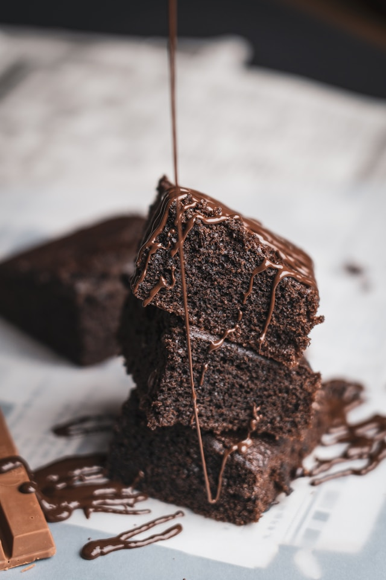

Enquanto derrete a manteiga, misture os 3 ovos e a açúcar e misture bem
Acrescente a manteiga derretida no ovo e o açúcar
Agora é so misturar o achocolatado e o trigo
Unte uma forma com manteiga e achocolatado
Leve ao forno a 180° C por 30 minutos

Bolo de Chocolate
Ingredientes:
Massa:
3 ovos
1 e meia xícara de chá de açúcar
Meia xícara de chá de óleo
1 xícara de chá de chocolate em pó
2 xícaras de chá de farinha de trigo
1 xícara de chá de água quente
1 colher de sopa de fermento em pó
Modo de preparo da massa:
Em uma tigela, coloque 3 ovos,1 e meia xícara de chá de açúcar,
meia xícara de chá de óleo,
1 xícara de chá de chocolate em pó e 2 xícaras de chá de farinha de trigo.
Misture delicadamente os ingredientes.
Em seguida, adicione 1 xícara de chá de água quente,
1 colher de sopa de fermento em pó e bata até ficar homogêneo.
Transfira a massa para uma forma untada e enfarinhada com uma mistura de farinha de trigo e chocolate em pó.
Leve para assar em forno preaquecido a 180 graus Celsius por 40 minutos.
Cobertura:
1 e meia xícara de chá de leite
Meia xícara de chá de chocolate em pó
1 colher de sopa de manteiga
1 xícara de chá de açúcar
Modo de preparo da Cobertura:
Em uma panela, coloque 1 e meia xícara de chá de leite,
meia xícara de chá de chocolate em pó,
1 colher de sopa de manteiga e 1 xícara de chá de açúcar.
Misture, ligue o fogo e deixe ferver.
Despeje a calda no bolo ainda quente e sirva em seguida.
Waffles Americano
Ingredientes:
Massa:
1 xícara (chá) de farinha de trigo
1/2 colher (chá) de sal
1 colher (chá) de açúcar
1 gema
1 colher (chá) de fermento em pó
1 colher (sopa) de manteiga derretida
1 xícara (chá) de leite
1 clara
Modo de preparo:
Peneire todos os ingredientes secos.
Acrescente a gema, o leite, a manteiga derretida aos ingredientes secos e misture-os bem.
Junte a clara batida em neve, incorporando delicadamente.
Despeje aproximadamente 1/2 xícara de chá de massa na forma de Waffle quente.
A luz do indicador deverá estar apagada, quando a massa for colocada a luz acenderá.
Quando a luz apagar novamente, o Waffle está pronto.
Você poderá servir estes Waffles com geleia ou até mesmo requeijão.
O único inconveniente desta receita é que você tem que ter a máquina de waffle (nunca tive a experiência de fazê-lo sem a máquina).